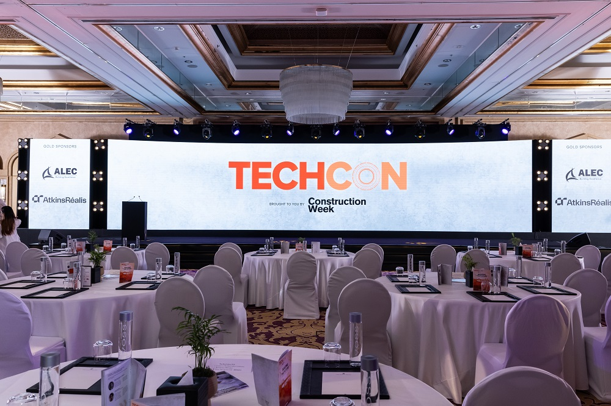

History of TechCon
TechCon began in 2010 as a grassroots effort to bring innovators and tech enthusiasts together. Over the years, it has grown into a leading international event known for fostering breakthrough ideas, networking opportunities, and startup success stories.

Our Mission
TechCon is driven by a passion for connecting people, sharing knowledge, and empowering innovation. Our mission is to provide a collaborative platform where ideas thrive, startups launch, and the future of technology is shaped.
Past Speakers

Ada Lovelace
Computer science pioneer and advocate for ethical AI. She inspired attendees with her keynote on the human side of machine learning.

Alan Turing
Widely known for his contributions to modern computing, Turing’s talk focused on cybersecurity and the importance of digital trust.

Grace Hopper
Known as the mother of COBOL, Hopper shared her experiences in software development and leadership in the tech world.